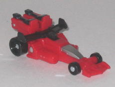
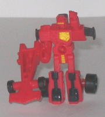
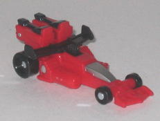
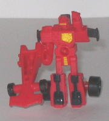
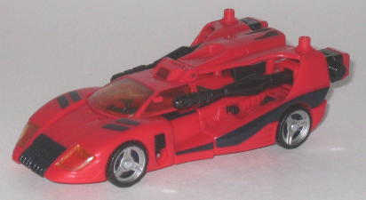
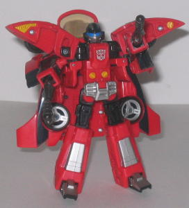

 
Allegiance : Autobot?
Size : Minicon
Difficulty of Transformation : Very Easy
Color Scheme : Black, light red, and some silver and goldish yellow
Rating : 7.2
(NOTE: Because this set is a repaint, this is not a full-blown review. This mainly covers any changes made to the set and the color scheme, and merely compares it to Armada Blurr w/ Incinerator. For a review on the mold itself, read the review of Armada Blurr w/ Incinerator here .)
 Roadhandler
Roadhandler


Allegiance
: Autobot?
Size
: Minicon
Difficulty of Transformation
: Very
Easy
Color Scheme
: Black, light red,
and some silver and goldish yellow
Rating
: 7.2
Universe Roadhandler
is a definite throwback to G1 Roadhandler. Even though the robot mode and
vehicle mode look nothing like G1 Roadhandler's, the color scheme is very
similar, and considering that G1 Roadhandler was a Micromaster, it would
only make sense to make his Universe version a Minicon. ...Or is he a Minicon?
An oddity is that, although the actual toy still has the Minicon symbol
on its chest, the packaging lists Roadhandler as an Autobot. Hmmm... Well,
regardless, onto Roadhandler's color scheme-- there's way too much red
here. Oh, Roadhandler does have a decent amount of black, silver, and yellow
paint apps, but the black really needs to be more prevalent, as Roadhandler's
entire body and appendages are all made of red plastic. Using black plastic
for the upper arms and legs really would've made the color scheme much
more stomachable. It's not a bad color scheme in itself-- black, yellow,
silver, and red do go quite well together-- there just needs to be more
of a balancing act between the colors.
No mold changes have
been made to Roadhandler.
 Swerve
Swerve


Allegiance
: Autobot
Size:
Deluxe
Difficulty of Transformation
: Medium
Color Scheme:
Light red, black,
and some silver, goldish yellow, transparent sparkly yellow, metallic gunmetal
gray, and dull sky blue
Powerlinx ports
: 4 (2 gimmicked)
Rating
: 8.0
Swerve, just like Roadhandler,
is a throwback to the G1 character of the same name, and in the same manner
as well. G1 Swerve was a 4WD truck- this version of Swerve is a race car.
The vehicle modes could not be more different. Yet the name, combined with
the color scheme that is, again, similar to G1 Swerve's, suggests a deliberate
homage. My comments on Swerve's color scheme are generally the same as
Roadhandler's-- too much red, not enough other colors. Granted, Swerve
isn't as bad in this department as Roadhandler-- there is a decent amount
of black used on him-- but there's still too much of that light red used,
and there's very few paint apps used that aren't black. It just makes Swerve
look rather dull, especially when compared to his predecessor Blurr. This
is especially apparent in vehicle mode-- there's waaay too much red on
Swerve in that mode. More yellow or silver paint apps really would've done
wonders for the scheme, I think. Another complaint I have about the colors
is that Blurr's partially transparent head has been painted over on Swerve--
instead of seeing the optics behind a transparent mask, Swerve just has
too big optics where the transparent visor used to be. If the blue optics
were joined together, it would make a nice optic visor, but given that
they're seperated, they just look too big. On the upside, the black curved
lines along the sides of Swerve's vehicle modes are pretty cool, and his
sparkly yellow windows look rather neat.
No mold changes have
been made to Swerve.
I'm honestly surprised Swerve & Roadhandler were released in the mainstream Universe line-- their color schemes are relatively uninspired when compared to other toys in the assortment, and the paint apps aren't nearly as cool. Plus, it's rather early to be releasing Armada toys in the main Universe line, dontcha think? These guys seeme more like store exclusives, really (and that's definitely not a complement). They're not outright terrible, but they are dull. Armada Blurr & Incinerator are recommended over these two.
No Stats
Review by Beastbot